Legitimate Overrides in Decentralized Protocols
Engineering emergency governance under time pressure

TERSE 2026 · Elem Oghenekaro · Dr. Nimrod Talmon
The paradox
In crises, communities demand intervention. Outside crises, override capability reduces trust.

Evidence
Dataset and scope

Interpreting the Power Law Exponent (α = 1.33):
- Because 1 < α < 2, the distribution has a defined mean but infinite variance.
- This means standard deviation and traditional risk models fail; expected risk is heavily skewed by rare, catastrophic outliers (super-hacks).
Historical Context
Four eras of blockchain intervention
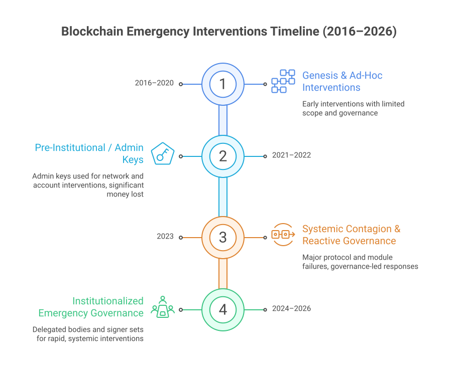
1) What
While systemic market failures
(e.g., Terra, FTX) account for vast losses, a persistent ~$10B strata consists of technical
exploits that are addressable by onchain emergency mechanisms. We synthesized some
major incidents to map this evolution.
Case Studies
Early interventions (Eras 1-3)
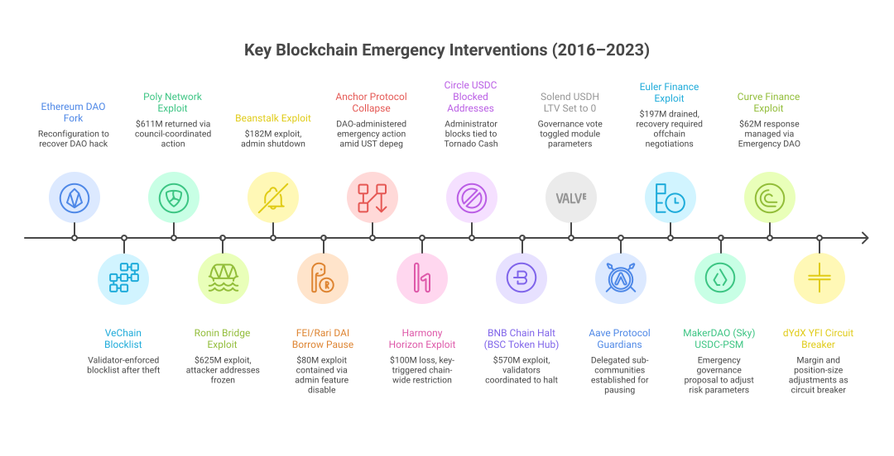
- Era 1 — Genesis (2016–2020): Ad-hoc forks and manual blocklists. No formal guardrails.
- Era 2 — Admin Keys (2021–2022): "God Mode" keys to freeze assets; validator collusion to halt networks.
- Era 3 — Reactive Governance (2023): Circuit breakers, delegated risk parameters, off-chain war rooms.
Case Studies
Modern interventions (Era 4)
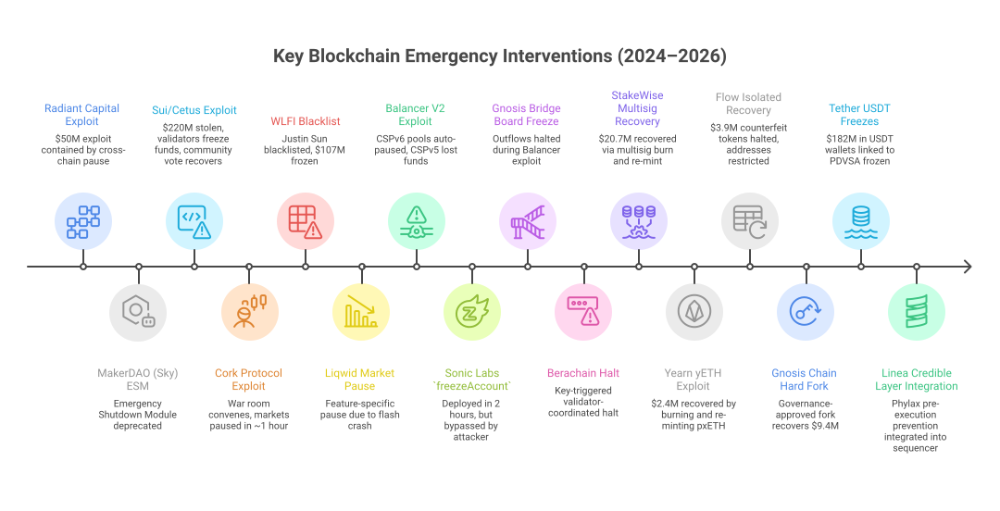
- Era 4 — Institutionalization (2024–2026): Emergency capabilities transition into formalized, mathematically constrained engineering — Security Councils, SEAL911 war-rooms, scoped subDAOs, and verifiable credible layers.
Authority Distribution
Who makes the decision?
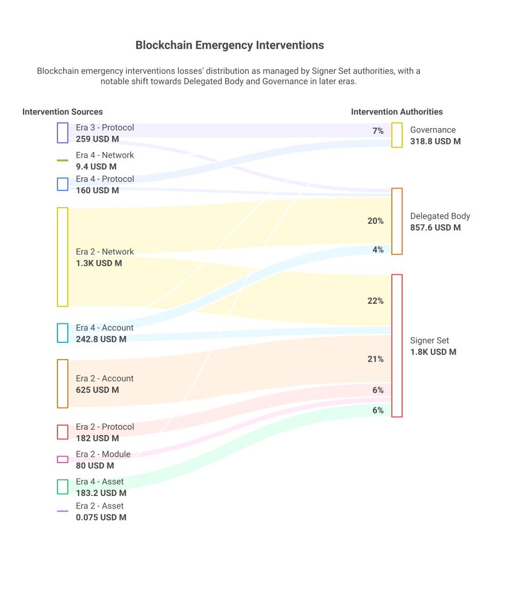
Heavy tails
Super-hacks dominate the risk
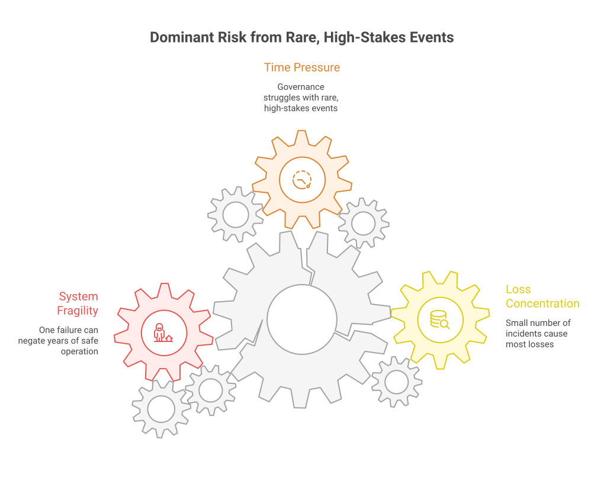
Key insight:
~80% of cumulative losses are concentrated in a small number of
incidents. In heavy-tailed systems, one governance failure can dominate years of safe
operation.
Design space
Scope × Authority taxonomy
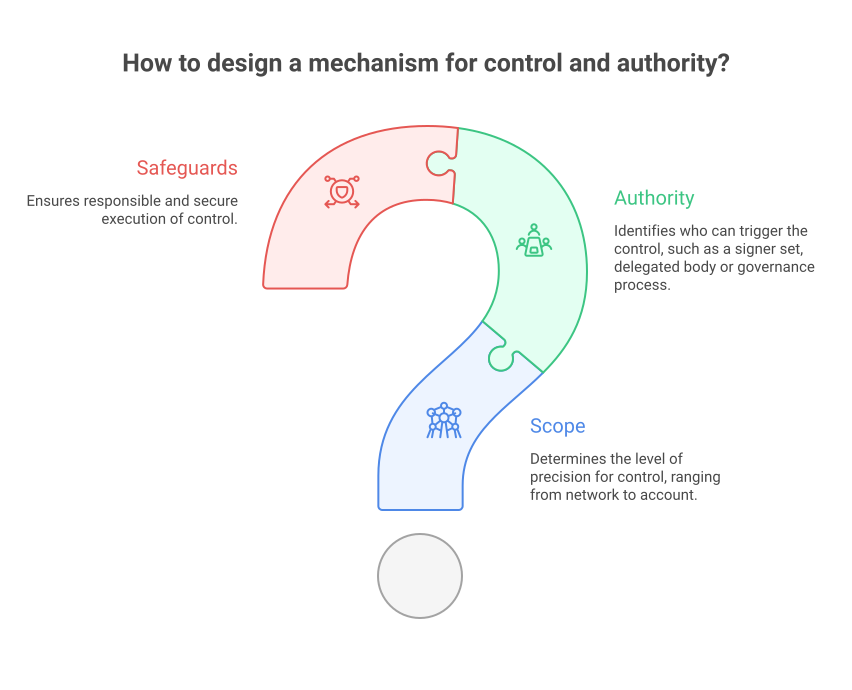
Scope (Precision) × Authority (Trigger Holder)
Reframes the "centralized vs
decentralized" debate into mechanism design: what scope, triggered by whom, under what
safeguards.
Taxonomy Examples
Defining Scope and Authority
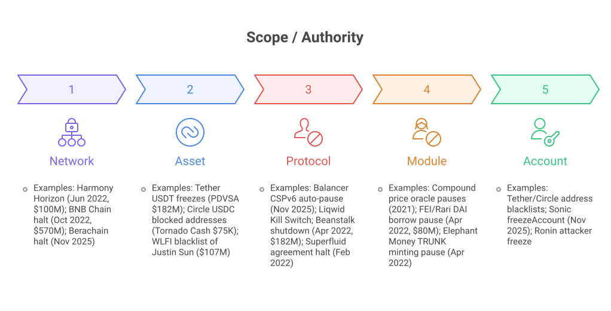
Control Mechanisms
Decentralized control in practice
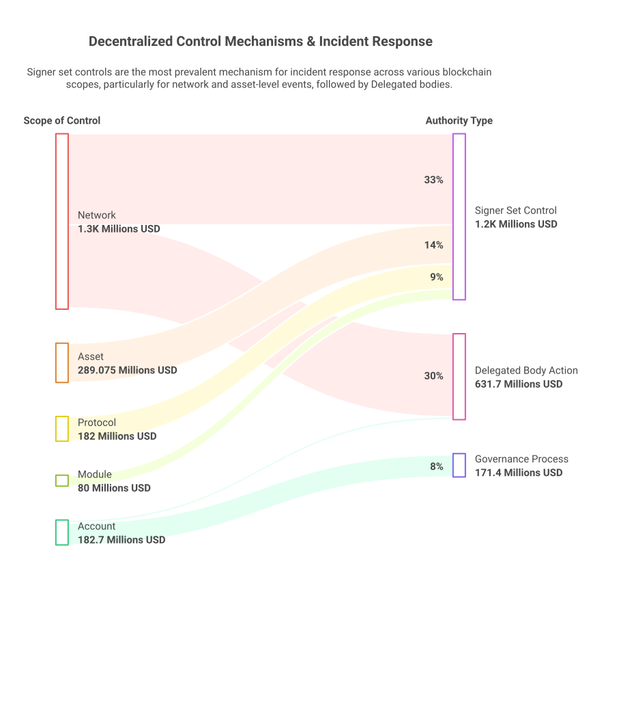
Objective
What are we optimizing?

Risk vs. risk:
Most real decisions aren't risk vs. safety — they're action risk
vs. inaction risk, where the baseline is not neutral.
Model
Expected cost framing (intuition)

ExpectedCost(m) = CentralizationCost(m) + Σ Pr[h] · ( Time(m) · DamageRate(h) + BlastRate(m) )
Empirics
Scope–Authority matching

- Signer Set (Oligarchy): High speed (~30 min), 38% success, high volume (73%).
- Delegated (Representative): Medium speed (60-90 min), 54.4% success.
- Governance (Direct): Low speed (days), 87.8% success (5 cases, mixed recovery/hybrid), low volume (9.6%).
Sentiment
Legitimacy cost is not fixed
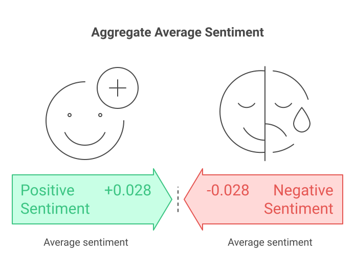
Empirical finding:
Aggregate sentiment across 271 verified incident posts is slightly
positive (+0.028), but highly variable. Positive sentiment reduces the effective
centralization cost of an override mechanism.
Tooling
From debate to mechanism selection
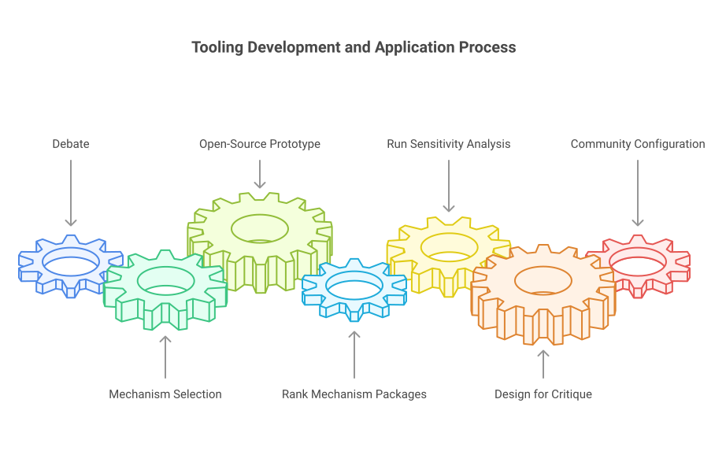
Principles
Actionable design takeaways
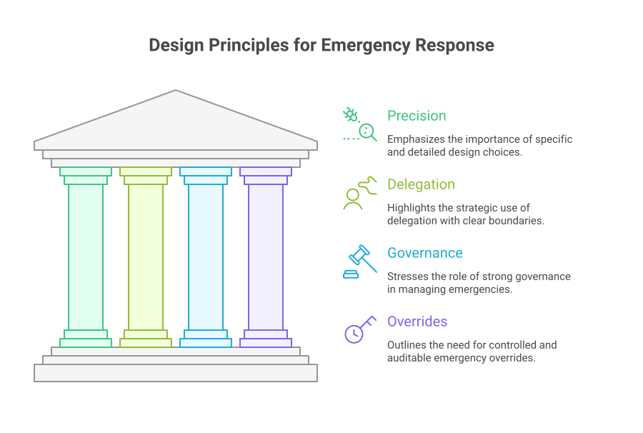
The Delegation Sweet Spot:
Pure governance is too slow for containment. Signer sets impose too
high a trust tax. Bounded delegated councils (Emergency subDAOs) occupy the empirical sweet
spot.
Anti-drift anchor
Layered stack: prevention, bounded response, tooling

The Goal
A layered stack prevents permanent
damage from novel exploits while explicitly minimizing the shadow centralization of the response
mechanisms themselves.
Credible layers
Where they fit (and what they don't solve)
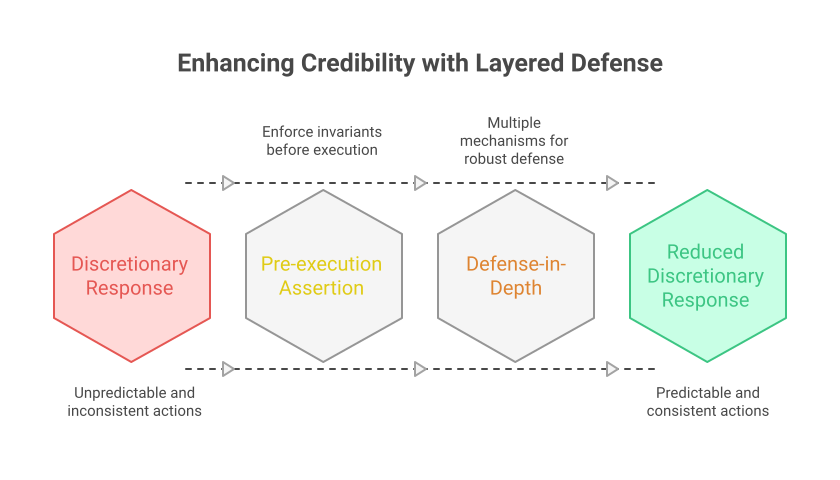
Comparison
Design schools in the market
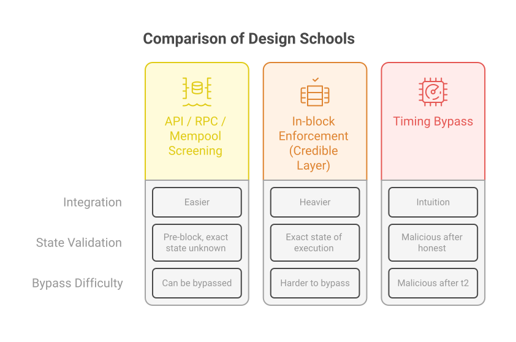
Incentives
"Do nothing" is an equilibrium

- Acting creates a signature — you're on record.
- Inaction creates ambiguity — plausible deniability.
- Ambiguity can be career-safe even when systemically harmful.
Walkthrough
A single incident, mapped to the taxonomy

Implementation
Patterns (how to embed legitimacy)

Case note
Gnosis: forum consultation

Closing
What to do next
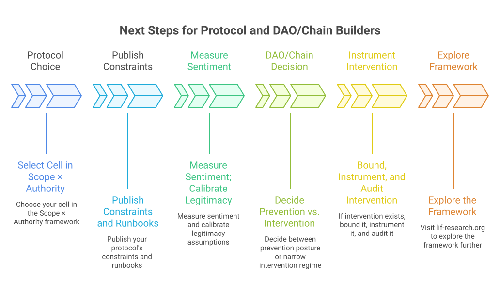
Explore the framework: lif-research.org ↓ PDF